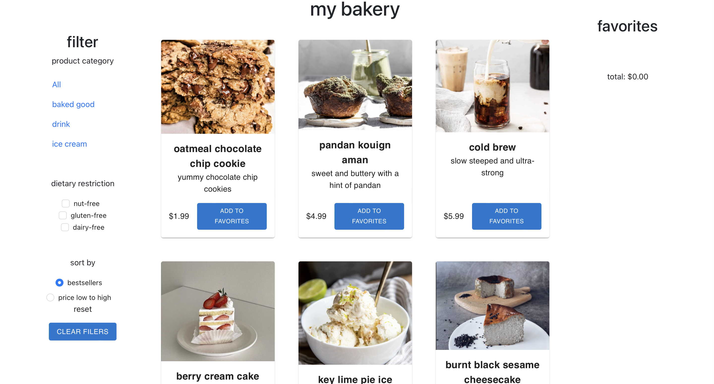

Developing (creating menu items) and developing (creating a React App) for the bakery I've always wanted to start
The goal here was to design an app to show list of items that you could filter and sort while learning React.
I have no React experience and was extremely tired, but if nothing else keeps me going, pastries and an overpriced drink will. So, I chose some basic items (pastries + drinks + ice cream) that you could filter (based on type + dietary restriction) and sort (by price + bestsellers the default) and even add to a favorites list that will keep track of the total of your selections.
Figuring out how to make this.
Yea
So, I actually had to code it. She's something. Look
here if you want.
Honestly, I liked learning React and that it has so many design tools, so I didn't have to code a lot of components from scratch.
Not sure still what exactly a component is, but I know enough to start a bakery now.
🎂